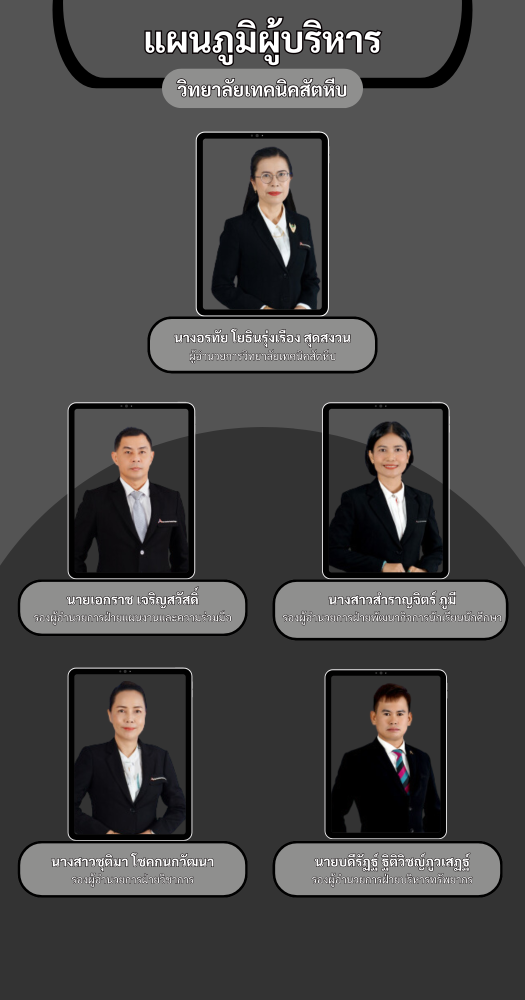

วิทยาลัยเทคนิคสัตหีบ
Thai-Austrian
ประวัติความเป็นมา
อัตลักษณ์และเอกลักษณ์
ปรัชญา วิสัยทัศน์ พันธกิจ
นโยบายของวิทยาลัย
ทำเนียบผู้บริหาร
ใบความรู้
ผู้จัดทำ
ทำเนียบผู้บริหาร

1. นายประพัฒน์ แสงวนิช พ.ศ.2512 - 2513
2. นายสงวน แก้วมรกต พ.ศ.2513 - 2513
3. นายสกุล เวชชกร พ.ศ.2513 - 2519
4. นายจรุง ผาสุวรรณ พ.ศ.2520 - 2522
5. นายจรูญ ชูลาภ พ.ศ.2522 - 2528
6. นายสงวน บุญปิยทัศน์ พ.ศ.2528 - 2530
7. นายเชิดเชลง ชิตชวนกิจ พ.ศ.2530 - 2531
8. นายวิชัย ป้อมประเสริฐ พ.ศ.2531 - 2535
9. นายสุชิน วังบรรพต พ.ศ.2535 - 2538
10. นายทรงสวัสดิ์ ทิพย์คงคา พ.ศ.2538 - 2540
11. นายสมศักดิ์ สุหร่ายคิมหันต์ พ.ศ.2540 - 2541
12. นายพิษณุ จงไพบูลย์สวัสดิ์ พ.ศ.2541 - 2545
13. นายวัชระ อนุศาสนกุล พ.ศ.2545 - 2551
14. นายสมชาย ธำรงสุข พ.ศ.2551 - 2553
15. นายวัชรินทร์ ศิริพานิช พ.ศ.2553 - 2559
16. นายศักดิ์ชัย ธีระประทีป พ.ศ.2559 - 2560
17. นายวิชัย หาญพลาชัย พ.ศ.2560 - 2562
18. นางอรทัย โยธินรุ่งเรือง สุดสงวน พ.ศ.2562 - ปัจจุบัน